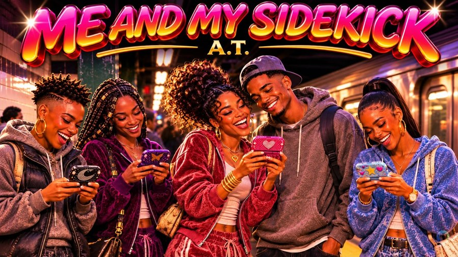

Track 05 · My Turn
Me And My Sidekick
Before the touch screens, before the apps, before the likes... there was the swivel. A.T. and her girls at NYU, flipping it open in Washington Square Park, texting under the library table, gluing rhinestones on in the dorm, slices on MacDougal, a strike at the bowling alley, and one boy texting back from two rows behind her in the lecture hall.
 Watch the official video
Watch the official video
Lyrics
[Intro]
(Snap) Hold up, let me text you back...
Me and my Sidekick, let's go
[Verse 1]
Screen on the swivel, flip it open, that's the sound
Thumbs on the keyboard, whole school passing it around
Rhinestones on the back, little lights blinking pink
Got the latest ringtone and you know what people think
Away message up, "at the mall, hit my cell"
Screen name on the profile, I was famous for a spell
Twenty two hundred texts and my mama see the bill
She said "who you talking to?" I said "Mama, chill"
Camera in my pocket, took a picture, sent it fast
Grainy little photo, but that moment gonna last
Everybody had one if they mattered on the block
You could tell who was who by the swivel and the clock
[Hook]
Me and my Sidekick (snap), flip it open (snap)
Every message hit and the whole crew know it
Me and my Sidekick (snap), never closing (snap)
Got the world in my palm and the keys glowing
Text me, text me, light me up all night
Me and my Sidekick, everything is right
(Snap snap) Me and my Sidekick
(Snap snap) Me and my Sidekick
[Verse 2]
Rappers had 'em, singers had 'em, ballers in the stands
Saw it in the videos in everybody's hands
Customized the case with the colors of my set
Typing out my feelings that I ain't said yet
Top eight shuffling, put you in the spot
Change it when you act up, you know that's what you got
Ran out of minutes but the texting never stopped
Charging by the bed so the message never dropped
Swivel to the left, swivel to the right
Little screen glowing underneath the blanket at night
Every buzz felt like a love letter in the mail
Me and my Sidekick, couldn't fail
[Hook]
Me and my Sidekick (snap), flip it open (snap)
Every message hit and the whole crew know it
Me and my Sidekick (snap), never closing (snap)
Got the world in my palm and the keys glowing
Text me, text me, light me up all night
Me and my Sidekick, everything is right
(Snap snap) Me and my Sidekick
(Snap snap) Me and my Sidekick
[Bridge]
Before the touch screens, before the apps
Before the likes, before the maps
It was me, my thumbs and a swivel and a glow
And every little message felt like a show
[Final Hook]
Me and my Sidekick (snap), flip it open (snap)
Every message hit and the whole crew know it
Me and my Sidekick (snap), never closing (snap)
Got the world in my palm and the keys glowing
Text me, text me, light me up all night
Me and my Sidekick, everything is right
(Snap snap) Me and my Sidekick
(Snap snap) Me and my Sidekick
[Outro]
Hold up... battery low.
Text you back. (snap)
Written by Grey Beard and A.T. ℗ & © 2026 Threadia AI, Inc. All rights reserved.